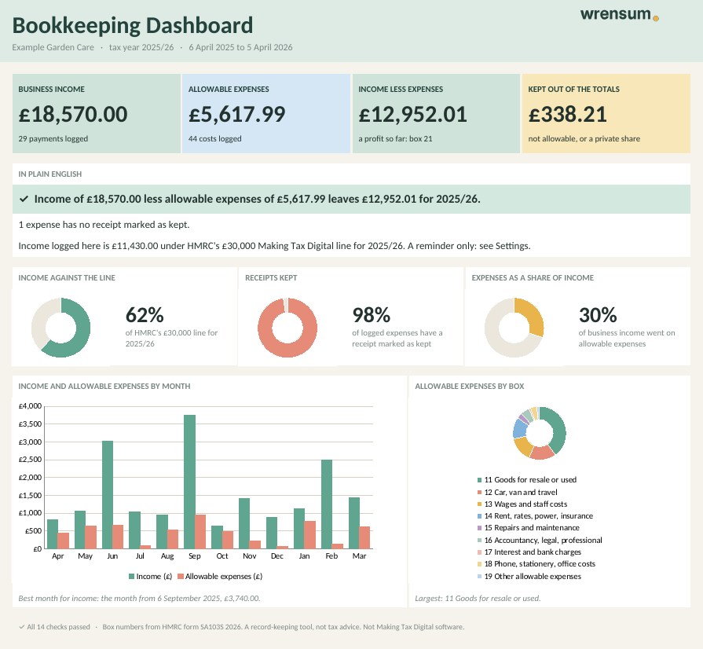
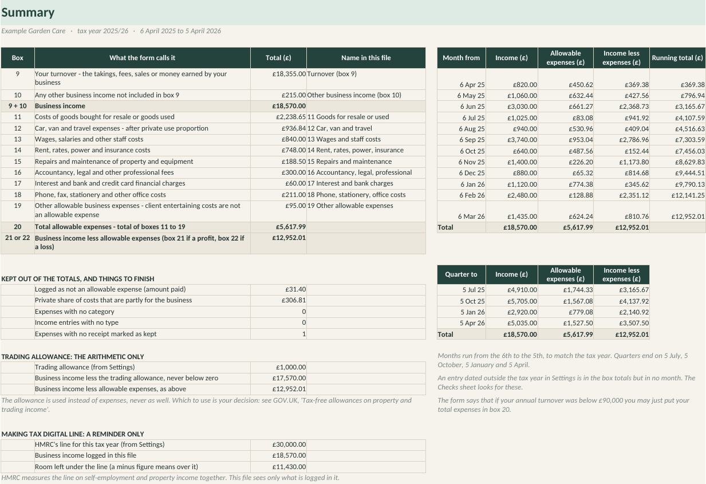
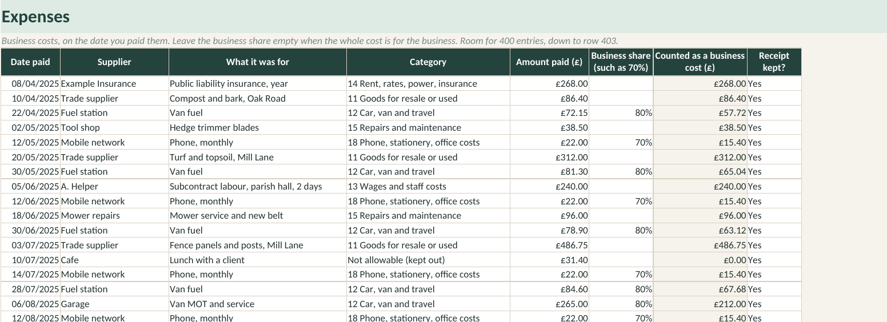

Sole Trader Bookkeeping Workbook
Log what came in and what went out. The workbook adds the year up under the same box numbers as HMRC's short self-employment pages, so the figures are ready when you sit down to do your Self Assessment return.
Buy for £12One-off payment. One Excel file (.xlsx), delivered as a download. A record-keeping tool: it is not tax advice and it is not Making Tax Digital software.

What you get
- An income log for 300 payments, marked as turnover or other business income
- An expenses log for 400 costs, with categories that are the form's own boxes 11 to 19, so there is nothing to map across afterwards
- A business share on any cost that is only partly for work, such as a phone bill or van fuel: only that share is counted
- A category for costs that are not allowable, such as client entertaining: logged so the record is complete, kept out of every total
- A summary with a total for each box from 9 to 20, and income less expenses for box 21 or 22
- Totals by tax month (6th to 5th) and by quarter, with a running total
- The trading allowance shown beside your expenses as plain arithmetic, so you can see both figures
- Your logged income shown beside HMRC's Making Tax Digital line for the tax year, as a reminder
- A dashboard, in light and dark, that gives the year in plain English and counts the expenses with no receipt
- A sheet of 14 checks that looks for common slips: an entry with no category, a date outside the tax year, an amount typed as text, a sum that has been typed over
Who it is for
UK sole traders who are not VAT registered, keep their own books and fill in the short self-employment pages of the tax return: trades, gardeners, cleaners, tutors, drivers, makers, freelancers and anyone with a side business. It works for any tax year you choose, including 6 April 2025 to 5 April 2026, the year whose online return is due by 31 January 2027.
How to use it
- Enter your business name and the year your tax year starts in.
- Clear the example rows, then log money received and money paid, on the date it moved.
- Choose a category for each cost from the list. A short reminder of what usually goes under each one sits in Settings.
- Open the Summary for the box totals and the Dashboard for the year in plain English.


Questions
- Which form does it follow?
- The box numbers and labels are those printed on HMRC's SA103S 2026, the short self-employment pages for the 2025 to 2026 tax year, read on GOV.UK on 18 November 2026. HMRC issues new pages each April, so check the labels against the pages for your year. HMRC's notes say the short pages are for turnover of less than £90,000.
- Does it work out my tax?
- No. It adds up income and expenses and stops at boxes 21 and 22. The later boxes on the form, such as capital allowances and adjustments, are outside it, and it works out no tax or National Insurance.
- Does it tell me what I can claim?
- No. Each category has a short reminder, in our own words, of what HMRC's helpsheet HS222 lists under that heading. What you can claim depends on your own circumstances: check GOV.UK or ask an accountant.
- Is it Making Tax Digital software?
- No. It sends nothing to HMRC. On GOV.UK (read 18 November 2026) Making Tax Digital for Income Tax applies from 6 April 2026 to sole traders and landlords with qualifying income over £50,000, from 6 April 2027 over £30,000 and from 6 April 2028 over £20,000. The workbook shows your logged income beside the line for your tax year as a reminder. If you are over a line, check GOV.UK for what you need to use.
- I am VAT registered. Will it work?
- It was built for sole traders who are not VAT registered. It records what you received and paid and works out no VAT.
- Does it use cash basis?
- You enter each item on the date money was received or paid, which is how cash basis works. The form has a box to mark if you used traditional accounting instead.
- Can I use it for more than one year?
- Yes. Keep a blank copy and save a new copy for each tax year. HMRC says records must be kept for at least 5 years after the 31 January submission deadline of the tax year.
- Does it track mileage?
- No. The Mileage and Expense Tracker (£7) logs journeys and works out a claim at the approved mileage rates.
- What do I need to open it?
- Microsoft Excel. The file has also been tested in LibreOffice Calc. It contains no macros.
- Are the figures in it real?
- No. It comes with an invented gardening business to show the format. You clear the example rows and type your own.
Free to use first
The mileage claim calculator works out a business mileage claim, and the day rate calculator shows what to charge when you work for yourself.